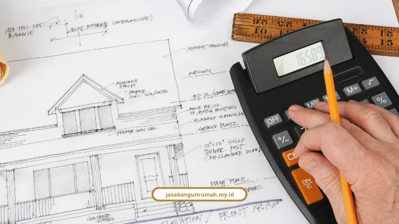

Daftar Isi
Biaya bangun rumah Jakarta untuk tipe 2 lantai di kawasan Jakarta Barat pada 2026 berkisar Rp3,2 juta sampai Rp8 juta per m², dengan total dana siap sekitar Rp570 juta hingga Rp666 juta untuk luas 90-100 m².
Berikut simulasi lengkapnya beserta rincian komponen biaya yang sering terlewat orang.
Kawasan seperti Kebon Jeruk, Puri Kembangan, Cengkareng, dan Grogol Petamburan makin ramai dengan rumah 2 lantai. Lahan sempit dipaksa jadi maksimal secara vertikal.
Masalahnya, banyak yang takut kena biaya membengkak di tengah jalan karena RAB tidak transparan sejak awal.
Kenapa Biaya Bangun Rumah di Jakarta Naik di 2026?
Biaya bangun rumah di Jakarta naik di 2026 karena kenaikan harga material dan upah tukang harian, dengan kenaikan rata-rata sekitar Rp700 ribu per m² dibanding tahun sebelumnya.
Wildan dari Tim Rebwild Construction menjelaskan bahwa biaya bangun rumah 2 lantai di Jakarta pada 2026 mulai dari Rp5,5 juta per m² untuk spesifikasi material standar, naik dari Rp4,8 juta per m² di tahun 2025.
Kenaikan ini juga terasa di upah tukang harian:
- Upah tukang harian naik 15-20 persen menjadi Rp230.000 - Rp240.000 per hari per orang.
- Upah kenek atau pembantu tukang berkisar Rp190.000 - Rp200.000 per hari.
Taufiq Hidayat, Direktur Mortar Indonesia, menambahkan bahwa tarif upah tukang harian sangat bervariasi tergantung keahlian spesifiknya, entah tukang batu, kayu, besi, gali, atau listrik, dengan rentang umum Rp170.000 sampai Rp270.000 per hari.
Berapa Rincian Tarif Borongan Bangun Rumah per M² di Jakarta?
Tarif borongan bangun rumah full (jasa plus material) di Jakarta berkisar Rp3,2 juta sampai Rp8 juta lebih per m², tergantung kelas spesifikasi yang dipilih.
- Kelas Standar / Budget Minimalis: Rp3.200.000 - Rp5.500.000 per m², material lokal, lantai keramik 40x40 cm, atap baja ringan, cat standar.
- Kelas Menengah (Standard Developer): Rp4.300.000 - Rp7.000.000 per m², lantai granit tile 60x60 cm, cat eksterior weather shield, sanitair setara Toto/American Standard.
- Kelas Mewah / Premium: Rp5.600.000 - Rp8.000.000 lebih per m², lantai marmer atau granit slab impor, smart home system, kusen aluminium tebal.
Untuk spek menengah-atas di wilayah Jabodetabek secara umum, biaya konstruksi bisa mencapai Rp6 juta sampai Rp15 juta per m² tergantung kompleksitas desain.
Kalau memilih sistem borongan jasa saja (tanpa material), kisarannya Rp900.000 - Rp1.600.000 per m². Sedangkan sistem harian, kepala tukang atau tukang ahli dibayar Rp230.000 - Rp270.000 per hari, dan kenek/helper Rp190.000 - Rp200.000 per hari.
Berapa Biaya Perizinan PBG untuk Rumah di Jakarta?
Biaya perizinan PBG untuk rumah tinggal sederhana di Jakarta berkisar Rp60.000 sampai Rp80.000 per m², dengan proses 14 sampai 30 hari kerja.
Sejak 2021, IMB sudah diganti PBG lewat OSS RBA atau Dinas PTSP. Sebagai contoh hitungan, rumah 2 lantai seluas 120 m² dikalikan Rp65.000 per m² menghasilkan retribusi resmi Rp7.800.000.
Syarat utama pengajuannya meliputi fotokopi KTP, Sertifikat Tanah (SHM), Surat Pernyataan Tanah Tidak Sengketa, Gambar Rencana Bangunan (DED), dan Surat Keterangan Tata Ruang.
Bagaimana Simulasi Hitung RAB Rumah 2 Lantai di Jakarta Barat?
Simulasi RAB rumah 2 lantai di Jakarta Barat untuk tipe 90 m² membutuhkan total dana sekitar Rp570 juta, sementara tipe 100 m² membutuhkan sekitar Rp666 juta, sudah termasuk dana darurat.

Simulasi Kasus 1: Rumah 2 Lantai Tipe 90 m² (Lahan 45 m² x 2 Lantai)
- Biaya konstruksi murni (90 m² x Rp5.500.000/m²): Rp495.000.000
- Biaya instalasi listrik & PLN: Rp1.000.000
- Dana darurat/tak terduga (15%): Rp74.250.000
- Estimasi total biaya bangun: Rp570.250.000
Simulasi Kasus 2: Rumah 2 Lantai Tipe 100 m² (Spek Menengah Jakarta)
- Biaya konstruksi fisik murni (100 m² x Rp6.000.000/m²): Rp600.000.000
- Estimasi retribusi PBG resmi (100 m² x Rp65.000): Rp6.500.000
- Dana darurat/contingency (10%): Rp60.000.000
- Estimasi total kesiapan dana: Rp666.500.000
Rincian komposisi persentase alokasi RAB-nya kira-kira begini:
- Pondasi & struktur beton bertulang: sekitar 30-35 persen.
- Dinding & plesteran: sekitar 15 persen.
- Atap & rangka: sekitar 10-15 persen.
- Lantai & finishing interior: sekitar 15-20 persen.
- Pintu, jendela, & kusen: sekitar 10 persen.
- Instalasi MEP: sekitar 10 persen.
Dana darurat sebesar 10-15 persen dari total anggaran konstruksi murni ini wajib disisihkan untuk mengantisipasi fluktuasi harga material yang bisa berubah kapan saja.
Bagaimana Cara Hemat Biaya Bangun Rumah Tanpa Kurangi Kualitas?
Cara hemat biaya bangun rumah tanpa mengorbankan kualitas adalah menerapkan konsep rumah tumbuh dan green design pasif sejak tahap desain awal.
Muhamad Alif Pinapan Hasibuan, Tri Wibowo, Redemtus Zagoto, dan Wiliam Hendry, peneliti arsitektur dari Universitas MPU Tantular Jakarta, mengungkapkan dalam risetnya soal hunian Jabodetabek bahwa strategi rumah tumbuh (incremental housing) dengan struktur awal siap kembang mampu menghemat modal awal hingga 49-50 persen.
Selain itu, penerapan green design pasif seperti ventilasi silang dan roster mampu menghemat konsumsi listrik hingga sekitar 260 kWh per bulan, setara penghematan Rp350.000 - Rp450.000 per bulan, atau akumulasi sekitar Rp82 juta dalam 20 tahun.
Kami menerapkan pendekatan ini di setiap desain yang kami buat untuk klien di Jakarta Barat dan sekitarnya, dan penjelasan lengkap soal cara kami menjaga transparansi RAB dari awal sampai akhir proyek ada di artikel utama kami soal jasa bangun rumah Jakarta.
Kenapa Pilih Jasa Bangun Rumah untuk Bangun Rumah 2 Lantai Anda?
Kami menangani proyek rumah 2 lantai dengan sistem RAB transparan sejak konsultasi awal, jadi tidak ada biaya siluman yang muncul di tengah proyek.
Beberapa hal yang kami tawarkan untuk proyek rumah 2 lantai:
- Estimasi waktu pengerjaan 4-6 bulan untuk luas 150-200 m².
- Garansi struktur setelah serah terima kunci.
- Laporan progres berkala berupa foto dan catatan tertulis.
- Sistem pembayaran bertahap sesuai progres fisik yang disepakati.
Budi Santoso, klien rumah tinggal kami di Bekasi, berbagi pengalamannya:
"Proses pembangunan rumah kami berjalan sangat rapi. Tim selalu memberi kabar perkembangan proyek dan hasilnya jauh melebihi ekspektasi kami."
Kalau Anda tertarik menggabungkan desain rumah 2 lantai dengan penataan ruang dalam yang matang, kami juga melayani lewat halaman jasa desain interior dan jasa arsitek kami.
Yuk Hitung Anggaran Bangun Rumah Anda Sekarang
Membangun rumah 2 lantai di Jakarta Barat memang butuh perhitungan matang, dari biaya per m², upah tukang, sampai retribusi PBG.
Tapi dengan simulasi yang jelas seperti di atas, Anda bisa mulai menyiapkan dana tanpa was-was kena biaya siluman di tengah jalan. Konsultasikan gratis kebutuhan desain dan estimasi RAB rumah Anda bersama tim kami lewat WhatsApp 0889-8964-3555.